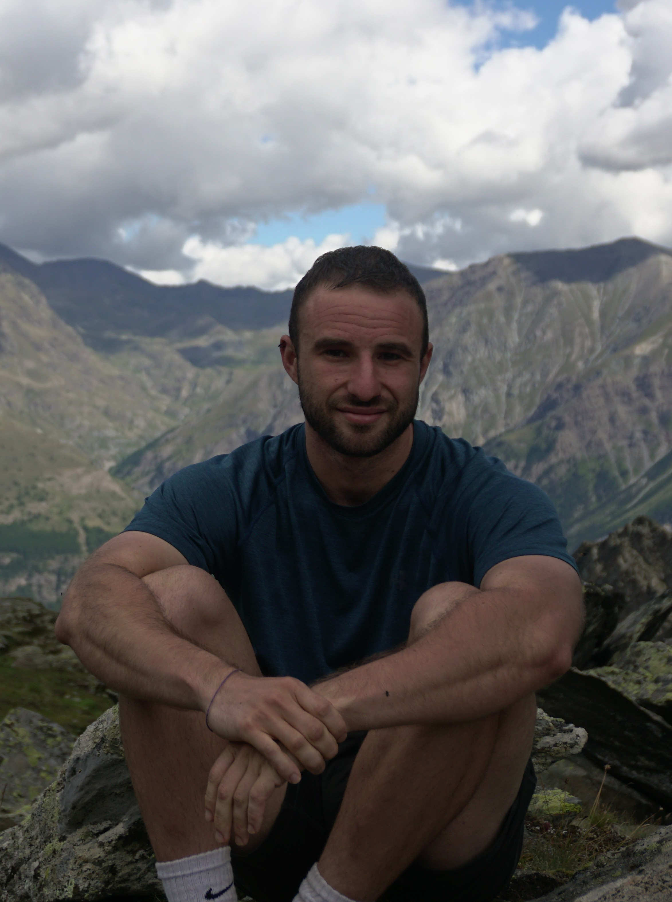

<body style="
    margin: 0;
    font-family: sans-serif;
    background-image: url('images/fondo_1.png');
    background-size: cover;          /* La imagen cubre todo */
    background-position: center;     /* Centrada */
    background-repeat: no-repeat;    /* No se repite */
    min-height: 100vh;               /* Al menos toda la altura de la ventana */
">
    <section style="
        display:flex;
        align-items:center;
        gap:3rem;
        padding:3rem;
        max-width:900px;
        margin:auto;
        border-radius:10px;
        flex-wrap: wrap;
    ">
        

        <div style="
            flex:1;
            background-color: rgba(255,255,255,0.4); /* Cuadro semi-transparente */
            padding:2rem;
            border-radius:10px;
            color:black;
            box-shadow: 0 4px 10px rgba(0,0,0,0.1);
        ">
            <h2>About Me</h2>
            <p>
              I am an evolutionary biologist specializing in developing new AI methods to tackle complex evolutionary questions. 
              I also conduct empirical research, with experience ranging from microbial ecology to macroevolutionary patterns. 
              My multidisciplinary approach allows me to understand diverse biological problems and provide solutions with programming and computational tools.
            </p>
        </div>
    </section>
</body>
